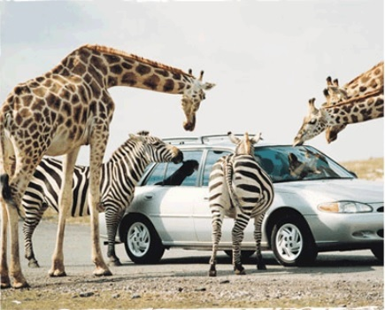

Places to visit with your kids in summer
Written by Mercy Loachamin - on May 22, 2013.

The CN Tower is Canada's most wonderful architectural triumph with Toronto's most spectacular views in day and night.You can explore two observation levels up to 1,136 ft/346m, the world famous Glass Floor at 1,122 ft./342m with outdoor SkyTerrace, and access to attractions in the CN Tower story with Excellence film, motion theatre ride and more. It is a 553.33 m-high (1,815.4 ft)concrete communications and observation tower in Downtown Toronto, Ontario, Canada. It has built in 1976,becoming the world's tallest free-standing structure and world's tallest tower at that time. CN tower was declared as one of the modern Seven Wonders of the World by the American Society of Civil Engineers. It attracts more than two million international visitors annually.This is one of the best place for you to visit with your kids.

African Lion Safari is a family-owned safari park,just an hour outside of Toronto. It has all the wonders of Africa including doors locked and windows up, a one-hour drive through the reserve takes families past grazing giraffes, exotic birds and majestic lions. You can also leave your car parked and take a guided bus tour through the safari for an additional fee. You can see live animal performances including the Parrot Paradise Show, Birds of Prey Flying Demonstration and Elephant Round-Up, or watch the Elephant Swim in the recreational lake. African Lion Safari also provides picnic areas, the boat tour and Misumu Bay water play area for the kids.
Marineland is one of canada's first amusement and animal exhibition park in the city of Niagara Falls, Ontario, Canada. Lot of entertainment for kids and adults and swim-with-the-dolphins facility.Its blend of animal attractions and rides, it is one of the main tourist destinations in Niagara Falls, Canada.Enjoy the wonderful dolphins performance and do not miss the sky screamer the worlds highest tower ride.

The Ontario Science Centre is a science museum in Toronto, Ontario, Canada. The Ontario Science Centre delights, informs, and challenges the communities we serve. It is a very good place for kids to innovative thinking and provocative dialogue in science and technology.